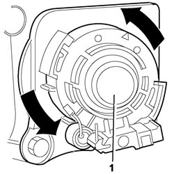

5570T94 REAR TWEETER (ONE), LH OR RH - R R
- Path
- Procedures > 55 ELECTRICAL EQUIPMENT > 5570 ACCESSORIES > 5570T CAR RADIO AND CAR TELEPHONE > 5570T94 REAR TWEETER (ONE), LH OR RH - R R
- Kind
- repair procedure (removal / refitting; the operation number is the code)
- Applies to
- all engines; all production periods
- Interactive page
- https://sloeber94.github.io/elrnDB-fCrm/en/#/194000791
Applies to: all engines; all production periods
 Removing
Removing
 Refitting
Refitting- Turn the ignition key to the OFF position.
- Disconnect the negative battery terminal.
Description | Connector | |
|---|---|---|
BATTERY |
Op. 7010E14 TOP COVER OF REAR SIDE DOOR INNER PANEL - R R OR REPLACE
Op. 7010M10 REAR SIDE DOOR ELECTRICALLY OPERATED WINDOW SWITCH (ONE), LEFT OR RIGHT - R.R
Op. 7010E10 REAR SIDE DOOR INNER PANEL - R.R. OR REPLACE
1. Turn the tweeter in an anti-clockwise direction and remove it from its housing.

Applies to: all engines; all production periods
Refitting
Removing- Check that the tweeter is not damaged.
- Place the tweeter in its housing and secure it to the rear side door inner panel turning it clockwise.
Op. 7010E10 REAR SIDE DOOR INNER PANEL - R.R. OR REPLACE
Op. 7010M10 REAR SIDE DOOR ELECTRICALLY OPERATED WINDOW SWITCH (ONE), LEFT OR RIGHT - R.R
Op. 7010E14 TOP COVER OF REAR SIDE DOOR INNER PANEL - R R OR REPLACE
- Connect the negative battery terminal.
Description | Connector | |
|---|---|---|
BATTERY |
- Check that the tweeter is working.